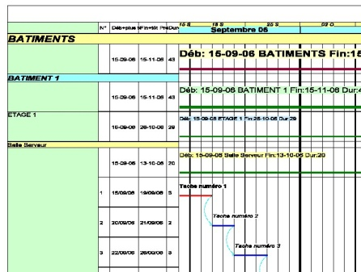
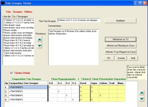
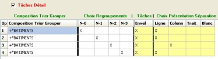
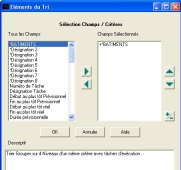
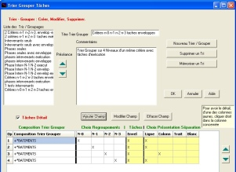
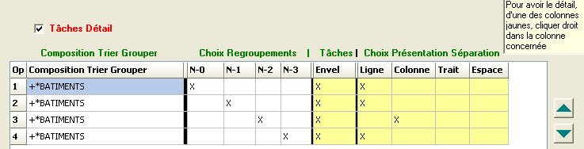

Trier / Grouper
Remarques sur « Trier Grouper Tâches » existant
Utiliser « Trier Grouper Tâches »
Créer Compléter Supprimer un Trier Grouper
Paramétrer les options valeurs et graphiques des 5 dernières colonnes
Remarques sur « Trier Grouper Tâches » existant
On va pouvoir trier les tâches en fonction de leur critère et ceci sur plusieurs niveaux, et regrouper celles-ci dans des bandes pour obtenir une visualisation et impression des plannings pour un besoin donné.
De plus il vous sera possible de faire apparaître devant les tâches d’exécutions les tâches enveloppes du critère et des sous critères, de les visualiser d’imprimer les plannings correspondants.
Dans l’exemple ci-dessous on va choisir une présentation d’un planning avec les tâches enveloppe des quatre niveaux hiérarchiques du critère phase Bâtiment (voir Annexe).

- critère N-0 Bâtiments code P
- sous critère N-1 :Bâtiment 1 (code P.01)
et Bâtiment 2 (code P.02)
- sous critère N-2 du bâtiment 2
Etage 1 (code P.01.01)
et Etage 2 code (P.01.02)
- sous critère N-3 de l’Etage 1
- salle serveur (code P.01.01.01)
- Salle Informatique (code P.01.01.02)
En dessous les tâches d’exécution
de la salle serveur, de l’étage 1, du bâtiment 1

Utiliser « Trier Grouper Tâches »
Dans la boîte de dialogue Utiliser Trier Grouper
Choisissez un « Trier Grouper Tâches » existant
vous avez 2 options
- 1er Appliquer ce trier grouper tel quel
2ie Modifier un trier/grouper
- faire apparaître ou non les tâches d’exécution
- déterminer a quel niveau hiérarchique regrouper les tâches
- faire apparaître ou non les tâches enveloppes
|
- Paramétrer les options valeurs et graphiques des 5 dernières colonnes - mémoriser si nécessaire ce « Trier Grouper Tâches » donner lui un titre et un commentaire |
 |
Créer Compléter Supprimer un Trier Grouper
Dans la boîte de dialogue Créer Compléter Trier Grouper
|
- cliquez sur « nouveau filtre » saisissez les différentes options de la sélection - cliquez sur «Ajouter champs » - choisir les champs - faire apparaître ou non les tâches d’exécution - déterminer a quel niveau hiérarchique regrouper les tâches - faire apparaître ou non les tâches enveloppes - paramétrer les valeurs graphiques correspondantes |
 |  |
Paramétrer les options valeurs et graphiques des 5 dernières colonnes
cliquez avec la souris dans la colonne concernée d’une des 5 colonnes avec fond jaune
pour avoir accès aux paramétrages des bandes du volet du bas (voir ci-dessous)
|  | ||||
| enveloppe de sous critère la couleur l’épaisseur du trait de faire apparaître o/n, au dessus du trait avec choix, police et couleur texte hauteur couleur de la ligne sa désignation - sa date du début - sa date de fin | désignation titre en ligne police et couleur texte du titre justification du titre la hauteur de la ligne couleur de la ligne | désignation titre en colonne police et couleur texte du titre justification du titre largeur de la colonne couleur de la colonne | séparation trait par ligne sans titre la couleur du trait l’épaisseur du trait le style du trait | séparation par espace le choix de l’épaisseur et la couleur de l’espace de séparation |
| Sommaire | Mots Clés | A | B | C | D | E | F | G | H | I | J | K | L | M | N | O | P | Q | R | S | T | U | V | W | X | Y | Z | Autres |